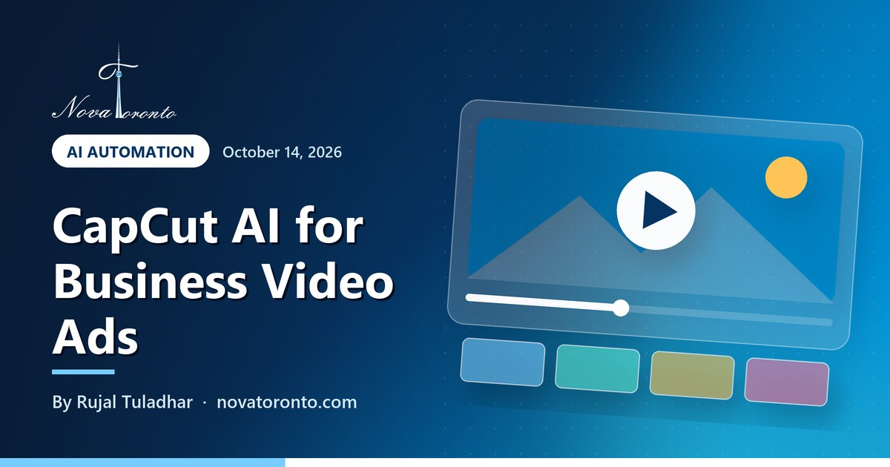

CapCut AI for business video ads: what it can do and the catches
Published October 14, 2026 • By Rujal Tuladhar

You need a short video ad for Instagram or TikTok, you do not have a videographer, and everyone keeps telling you to "just use CapCut." It is a fair suggestion. CapCut is a free editor with a long list of AI tools, and it can turn a few phone clips into a polished 15-second ad in an afternoon.
The catch is not the editing. It is the fine print: which AI features actually need a paid plan, and whether the music and templates you drop into your ad are licensed for business use at all. This post walks through what CapCut lists today (checked October 14, 2026), what it costs in Canada, what its own terms say, and a simple way to build a 15-second ad with it.
Long AI tool list
Auto captions, text to speech, background removal, AI video generation
Pro: CA$33.99/month
Listed on CapCut's pricing page, with 700 monthly AI credits
Music is the trap
Commercial sounds are licensed only for CapCut, TikTok and TikTok for Business
Check each template
Some materials are personal-use only; others allow limited commercial use
Build for 9:16
TikTok recommends vertical 9:16, at least 540 x 960 pixels
CapCut AI for business video ads: what it can do and the catches at a glance — the short version.
What CapCut's AI features actually are
"CapCut AI" is not one feature. It is a bundle of tools that CapCut lists on its AI tools page. The ones that matter for a business ad:
- Auto captions. The subtitle tool generates captions from the speech in your video, lets you fix typos in a list view and offers styled caption presets. CapCut notes accuracy depends on how clear your audio is.
- Text to speech. The text-to-speech page advertises 200+ AI voices, filterable by gender, age, style and language.
- Background removal, voice enhancement and noise reduction. Useful for cleaning up a product clip shot in a busy shop.
- AI video generation. The AI video generator page names the Dreamina Seedance 2.5 model and describes building a video from a script or idea, with a chosen style, aspect ratio, voiceover and duration. It also mentions over 100 digital avatars and an option to clone your own avatar from a short video of yourself.
CapCut also lists image tools (AI image generator, background remover, people and text removers) and links to third-party models such as Nano Banana Pro and Gemini Omni. That list changes often, so treat it as a snapshot of mid-October 2026.
Free vs Pro: what the pricing page lists in Canada
CapCut's pricing page shows four plans in Canadian dollars, marked as reference prices (you sign in to see final pricing, taxes and offers):
- Free: CA$0, with free templates and basic editing tools.
- Pro: CA$33.99 a month, with 700 monthly AI credits, access to AI features, all premium templates and 1 TB of storage.
- Ultra: CA$109.99 a month, with 11,997 monthly AI credits and some exclusive AI features.
- Teams: CA$17.50 per seat a month, with 700 AI credits per seat and a brand kit.
There is a mismatch worth knowing about. Individual tool pages describe things like text to speech and auto subtitles as free, and the video generator page says you can try Seedance 2.5 online for free. The pricing page, though, lists AI features and credits under the paid plans, with per-second rates for Seedance generation. In practice, expect to try AI tools on the free plan and to hit credit limits or a Pro prompt once you use them seriously.
The licence catch: music and templates
This is the part most small businesses miss. CapCut's Terms of Service (last updated April 15, 2026) say: "The terms governing whether Company Content can be used for commercial or non-commercial purposes may vary depending on the CapCut product you are using." Company Content means CapCut's own templates, music, fonts and effects, and its use is governed by the separate Materials License Agreement.
That agreement splits materials into two groups. Some "may only be permitted for personal and non-commercial use"; others, called Dual Use Materials, "may be used for limited commercial purposes." Music is the tightest. Tracks in CapCut's Commercial sounds library are "currently only licensed for being posted on CapCut, TikTok and TikTok for Business." Put that same track in a Facebook or Instagram ad and, in the agreement's words, you must "on your own obtain all necessary rights and permission from all rights owners." Materials also "can be used only within limited licensed territory," shown on the platform.
Even on TikTok, the platform's own rules for businesses are strict. The Commercial Music Library help page says "Businesses cannot use the general music library for commercial usage" and points them to its library of 1 million pre-cleared songs.
Two more points from the terms. CapCut states "We don't own your User Content," but you grant it a broad, perpetual, worldwide licence to content you upload. And if you use CapCut "on behalf of a business or entity," the business is responsible for the account, including use by staff and contractors. This is general information, not legal advice.
How to make a 15-second ad in CapCut
A simple structure that works for most local businesses:
- Seconds 0-3, the hook. Show the result, not your logo: the finished haircut, the clean car, the plated dish. Add one line of on-screen text naming the problem you solve.
- Seconds 3-10, the proof. Two or three quick clips of the work being done, shot vertically on your phone. Use background removal or noise reduction only if a clip needs it.
- Seconds 10-15, the offer. Price or offer, neighbourhood, and one clear action: book, call or visit.
Then: run auto captions and fix any errors by hand, since some people watch with the sound off. Set the canvas to 9:16. TikTok's in-feed ad specs recommend vertical 9:16 at 540 x 960 pixels or more, under 500 MB, in .mp4 or .mov, and warn that a safe zone for the app's buttons depends on your caption length, so keep text and logos in the middle of the frame. Shooting at 1080 x 1920 on your phone clears that minimum easily. Export without CapCut music, then add licensed audio separately. Before you pick a template, check what its licence allows for commercial use.
If you use an AI avatar or AI voice, do not present it as a real customer. Canada's Competition Bureau notes that the Competition Act restricts testimonials: you need the real person's written approval, and the ad must match what they actually said.
Who should use CapCut, and who should not
Good fit: owners who already film on their phone, post mostly to TikTok and Instagram, and want captions and quick edits without learning professional software. For a few ads a month, the free plan may be all you need.
Think twice: if your ads lean on popular music, if you run campaigns across many platforms with the same file, or if you need a clear written licence for a client or franchise head office. CapCut's licence is platform- and territory-limited, and its terms put responsibility on you. Also skip the AI video generator for anything showing your real product or premises; customers notice when the shop on screen is not yours.
The bottom line
CapCut AI is genuinely useful for a small business: auto captions, voice clean-up and quick vertical edits cover most of what a 15-second local ad needs, and you can start for nothing. The real risk sits in the licence. CapCut's music is cleared for CapCut and TikTok, not your Facebook or Instagram ads, and templates vary by item. Keep your own footage, add music in the ad platform, and check each template's label.
For the bigger decision, compare what an AI video ad costs against a Toronto videographer and our roundup of the best AI video generators in 2026. If your ads already get views but no sales, read why Facebook ads get clicks but no sales. New to AI tools? Our free AI course for beginners is a gentle start. And if you would rather have the ads made and run for you, see our digital marketing services.
Common questions
Is CapCut AI free?
Partly. CapCut's tool pages let you try features such as auto captions and text to speech for free, but its pricing page lists AI features and monthly AI credits under paid plans. On October 14, 2026, Pro was listed at CA$33.99 a month with 700 AI credits, shown as a reference price before tax.
Can I use CapCut videos for commercial use?
Your own footage, yes. CapCut's materials are different: some templates and effects are personal-use only, while Dual Use Materials allow limited commercial use. Check each template or sound in the app and read CapCut's Materials License Agreement. This is general information, not legal advice.
Can I use CapCut music in Facebook or Instagram ads?
Not under CapCut's licence. Its Materials License Agreement says Commercial sounds are currently licensed only for posting on CapCut, TikTok and TikTok for Business. For Facebook, Instagram or YouTube you must get the rights yourself, so use music you have licensed yourself.
What size should a CapCut video ad be for TikTok?
TikTok recommends vertical 9:16 for non-Spark in-feed ads, at 540 x 960 pixels or more, 500 MB or less, in formats such as .mp4 or .mov. Most phones shoot 1080 x 1920, which is fine. Keep text and logos away from the edges so the app's buttons do not cover them.
Want this working in your business?
Book a free 15-minute call and we'll map out which of these would actually save you time and win you customers.
Book a Free ConsultationNew to AI? Take our free 7-lesson AI course for beginners.
Sources: CapCut: Pricing (Canada, reference prices) • CapCut: AI tools • CapCut: AI video generator (Seedance 2.5) • CapCut: Add subtitles to video • CapCut: Text to speech • CapCut: Terms of Service (last updated April 15, 2026) • CapCut: Materials License Agreement (last updated July 25, 2023) • TikTok Ads Help Center: In-feed ads specifications • TikTok Ads Help Center: Commercial Music Library • Competition Bureau Canada: Use of tests or testimonials